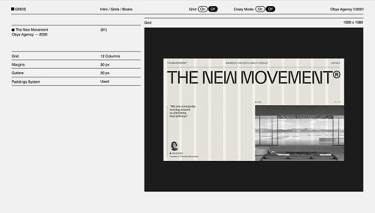

Grids in web design are invisible frameworks used to organize content on a page. They help designers create consistent, balanced, and visually appealing layouts by dividing the space into columns, rows, and modules. Grids make it easier to align elements, maintain spacing, and ensure a cohesive structure across different pages and screen sizes.
Using grids improves both aesthetics and usability, making websites clearer and more user-friendly.
Grids in web design are invisible frameworks used to organize content on a page. They help designers create consistent, balanced, and visually appealing layouts by dividing the space into columns, rows, and modules. Grids make it easier to align elements, maintain spacing, and ensure a cohesive structure across different pages and screen.
